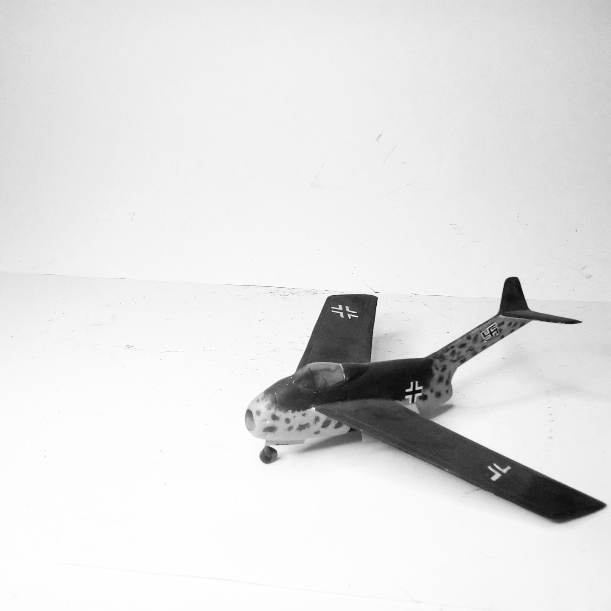
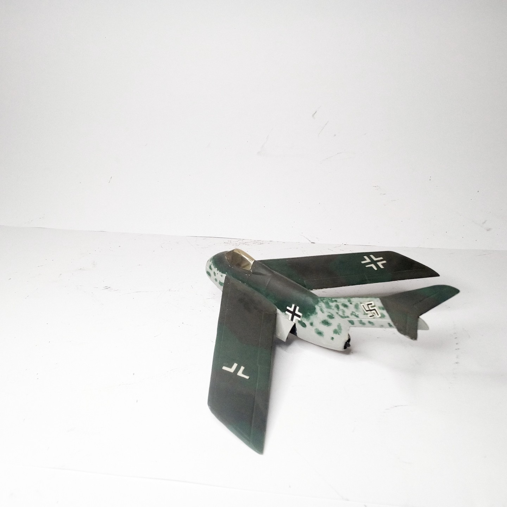

Aerei · scale model archive
Focke Wulf Ta183
Focke Wulf Ta183 — Kit: Airmodel vacform, Scale: 1/72. project of a single engined jet fighter 1944, very advanced aerodynamics for that time, even if…

Photo gallery

English description
project of a single engined jet fighter 1944, very advanced aerodynamics for that time, even if the T-tail could have given problems
#1/72 #Airmodel
Descrizione italiana
progetto di una single motored jet figther 1944, very avanzato aerodynamics per l’epoca, even if il T-tail could have given problems.